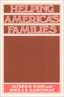

<body bgcolor="#FFFFFF" text="#000000" link="#0000FF" vlink="#CC0000" alink="#CC0000"><center><hr width="350" size="1" align="center" noshade>Studying service support systems responding to problems in the family dynamic<hr width="350" size="1" align="center" noshade><p><a href="https://cdcshoppingcart.uchicago.edu/Cart/ChicagoBook.aspx?ISBN=9780877222125&&PRESS=temple" target="_top">Buy this book!</a> | <a href="https://cdcshoppingcart.uchicago.edu/Cart/Cart.aspx?PRESS=temple" target="_top">View Cart</a> | <a href="https://cdcshoppingcart.uchicago.edu/Cart/Cart.aspx?PRESS=temple" target="_top">Check Out</a></p><p></p></center><!--none//--><h1>Helping America's Families</h1>
<h3>Alfred H. Kahn and Sheila B. Kamerman</h3>
<P>cloth 0-87722-212-6 $38.50, Oct 81, <FONT COLOR=#990033>Out of Stock Unavailable</FONT>
<BR> 311 pp
</P><BLOCKQUOTE><I>"An extremely important, if not revolutionary, document....Excellent descriptions of human service programs."</I>
<br>&#151<b><I>Social Service Review</I></b><I></I></BLOCKQUOTE>
<p><I>"We've been married for thirty-three years and now Roy wants a divorce. I don't know what to do."
<p>"The principal says my children are acting out at school and I'd better get help for them."
<p>"I finally found a job, but I need someplace to leave my three-year-old while I'm at work."
<p>"My mother just moved to Florida. Her heart is bad, and I'm worried about her living by herself so far away."</I>
<p>Millions of American families suffer from these and similar problems&#151personal and interpersonal problems, practical problems, problems requiring support or advice or advocacy. In response to these needs, American society has produced a myriad of helping services, all intended, directly or indirectly, to support the family as it seeks to cope with changes in its social and technological environment.
<p>Ranging from <I>Parents Without Partners</I> and marriage enrichment courses to counseling for drug abusers, these services have never before been examined as a "service system"&#151whether real or potential. In this wide-ranging study, Kahn and Kamerman trace the sources of these services in the marketplace, in the public service system, in the private not-for-profit agency, in churches and synagogues, and in self-help groups of various descriptions. They look at the differences and similarities among programs, their strengths and weaknesses, and who is most likely to use which kinds of programs, why, and how. They also review what little information there is on what kinds of problems American families have, and see themselves as having, and why the family, as such, should be an object of support and assistance. Finally, they offer some observations on how&#151and whether&#151American society can provide such a service system to its citizens.
<p>This, then, is an invaluable book for those who would understand what is available&#151and what is needed to support families in an increasingly complicated society.
<BR>&nbsp;<H2>About the Author(s)</H2>
<P><b>Alfred J. Kahn</b> teaches and conducts comparative international research in social policy, planning, social services, and family policy.</P>
<P><b>Sheila B. Kamerman</b> teaches and conducts comparative international research in social policy, planning, social services, and family policy. They are co-authors of five earlier books, including <I>Not for the Poor Alone</I> and <I>Social Services in the United States</I>, both published by Temple.</P>
<BR><H2>Subject Categories</H2>
<p><A HREF="/tempress/american.html" TARGET="_top">American Studies</a>
<BR><A HREF="/tempress/sociology.html" TARGET="_top">Sociology</a>
</p>
<p align="center"><a href="https://cdcshoppingcart.uchicago.edu/Cart/ChicagoBook.aspx?ISBN=9780877222125&&PRESS=temple" target="_top">Buy this book!</a> | <a href="https://cdcshoppingcart.uchicago.edu/Cart/Cart.aspx?PRESS=temple" target="_top">View Cart</a> | <a href="https://cdcshoppingcart.uchicago.edu/Cart/Cart.aspx?PRESS=temple" target="_top">Check Out</a></p><p><font face="Arial" size="1"><a href="copyright.html" onMouseOver="window.status='Web Copyright Policy';return true;" onMouseOut="window.status=''" title="Web Copyright Policy">&copy;</a> 2015 <a href="http://www.temple.edu" target="new" onMouseOver="window.status='Link to Temple University home page';return true;" onMouseOut="window.status=''" title="Link to Temple University home page">Temple University</a>. All Rights Reserved. http://www.temple.edu/tempress/titles/262_reg.html</font></p>